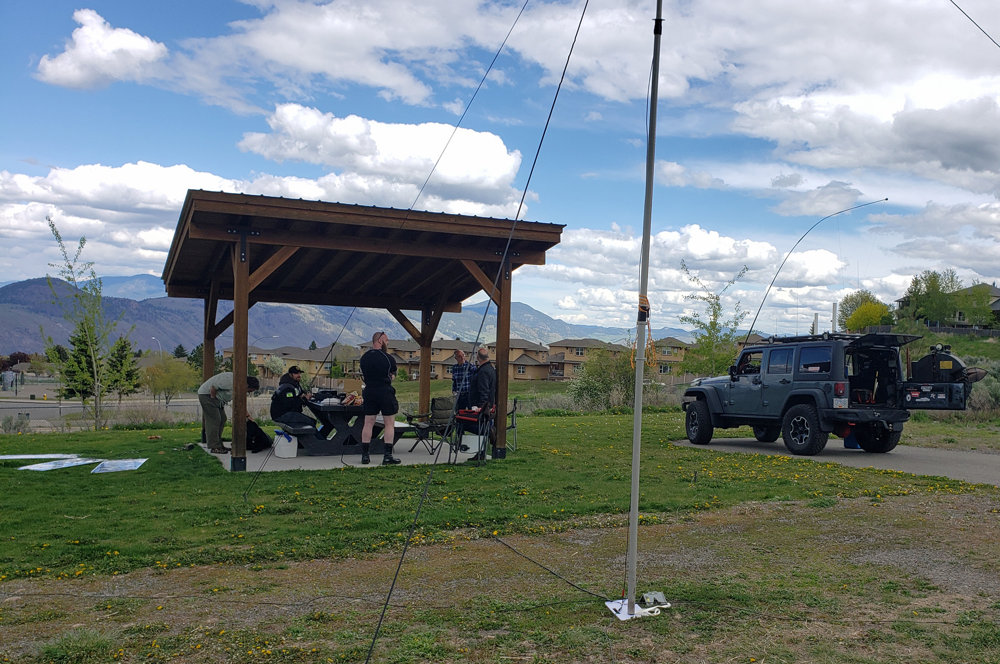

2022 KARC Picnic
Back to StoriesStory 691
Thu, 2022-06-02 20:15 — VE7FSR


The annual KARC Picnic was held Saturday, May 28 at the City of Kamloops Long Board Park in Aberdeen.
Ralph VA7VZA organized the picnic and the permitting from the City, and in attendance were Ralph VA7VZA, Myles VE7FSR, Simon VE7RIZ, Jordan VE7OSX, Peter VE7DNZ, Jim VE7JMN, Shawn VA7NIN, and Alphie the dog.
The gang set up a portable mast with a 20m quarter-wave vertical antenna, and four ground radials.
We tried out the club's new Icom IC-7300 HF radio, and Simon and Shawn made their first HF contacts with W9IMS the Indianapolis Motor Speedway ham special event station.
We had quite a few dog walkers wander by and ask us what we were doing, and the weather cooperated with some sunshine and a few overcast clouds.
For more photos of the picnic please see: Photo Album 2022 KARC Picnic